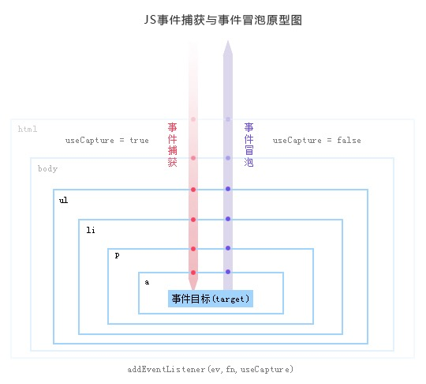
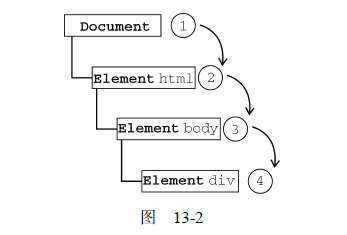
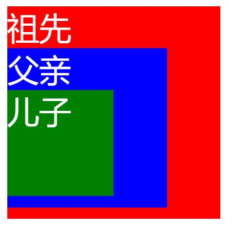
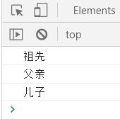
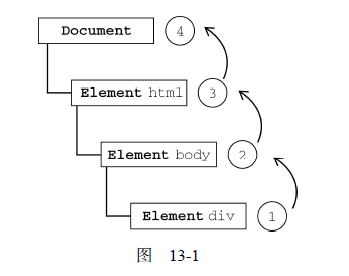
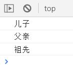
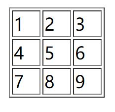
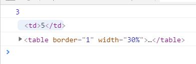

事件分为三个阶段：捕获阶段、目标阶段和冒泡阶段。
事件的第一个阶段是捕获阶段。事件从文档的根节点流向目标对象节点。途中经过各个层次的DOM节点，并在各节点上触发捕获事件，直到到达事件的目标节点。捕获阶段的主要任务是建立传播路径，在冒泡阶段，事件会通过这个路径回溯到文档跟节点。

- 捕获阶段
- 目标阶段
- 冒泡阶段
- 事件代理
捕获阶段
当某个元素触发某个事件（如onclick），顶层对象document就会发出一个事件流，随着DOM树的节点向目标元素节点流去，直到到达事件真正发生的目标元素。在这个过程中，事件相应的监听函数是不会被触发的。

示例
1 | <style> |


当我点击儿子的时候，就会从最外层开始触发，因为没有对document/html/body进行监听，所以从祖先开始触发，直到目标节点
目标阶段
当事件到达目标节点的，事件就进入了目标阶段。事件在目标节点上被触发，然后会逆向回流，直到传播至最外层的文档节点。
冒泡阶段
事件开始时由最具体的元素(文档中嵌套层次最深的那个节点)接收，然后逐级向上传播到较为不具体的节点（文档）。所有现代浏览器都支持事件冒泡，并且会将事件一直冒泡到window对象

示例（html代码同上）
1 | document.getElementById('ancestors').onclick = function(){ |

当点击儿子的时候，事件在儿子元素上触发后，开始逐级向上冒泡。
事件代理
事件代理就是利用事件冒泡，只制定一个时间处理程序，就可以管理某一类型的所有事件。
举个例子：有三个同事预计会在周一收到快递。为签收快递，有两种办法：一是三个人在公司门口等快递；二是委托给前台MM代为签收。现实当中，我们大都采用委托的方案（公司也不会容忍那么多员工站在门口就为了等快递）。前台MM收到快递后，她会判断收件人是谁，然后按照收件人的要求签收，甚至代为付款。这种方案还有一个优势，那就是即使公司里来了新员工（不管多少），前台MM也会在收到寄给新员工的快递后核实并代为签收。
这里其实还有2层意思的：
第一，现在委托前台的同事是可以代为签收的，即程序中的现有的dom节点是有事件的；
第二，新员工也是可以被前台MM代为签收的，即程序中新添加的dom节点也是有事件的。
为什么要用事件代理
在JavaScript中，添加到页面上的事件处理程序数量将直接关系到页面的整体运行性能，因为需要不断的与dom节点进行交互，访问dom的次数越多，引起浏览器重绘与重排的次数也就越多，就会延长整个页面的交互就绪时间，这就是为什么性能优化的主要思想之一就是减少DOM操作的原因；如果要用事件代理，就会将所有的操作放到js程序里面，与dom的操作就只需要交互一次，这样就能大大的减少与dom的交互次数，提高性能；
示例
比如现在我们需要对一个100行10列表格里的每一个td进行事件监听，当点击某个表格的时候则变为可编辑状态。如果把事件处理器加到这1000个单元格会产生一个很大的性能问题，并且有可能导致内存泄露甚至是浏览器的崩溃。相反地，使用事件代理，你只需要把一个事件处理器添加到table元素上就可以了，这个函数可以把点击事件给截下来，并且判断出是哪个单元格被点击了。
html
1 | <table border="1" width="30%"> |
js
1 | var table = document.getElementsByTagName('table')[0] |


当我点击5的时候，td就会通过事件冒泡到绑定的触发器table元素，然后获取到你点击的元素。
优点
通过刚才的对比介绍，大家应该能够体会到使用事件委托对于web应用程序带来的几个优点： 1.管理的函数变少了。不需要为每个元素都添加监听函数。对于同一个父节点下面类似的子元素，可以通过委托给父元素的监听函数来处理事件。 2.可以方便地动态添加和修改元素，不需要因为元素的改动而修改事件绑定。 3.JavaScript和DOM节点之间的关联变少了，这样也就减少了因循环引用而带来的内存泄漏发生的概率。